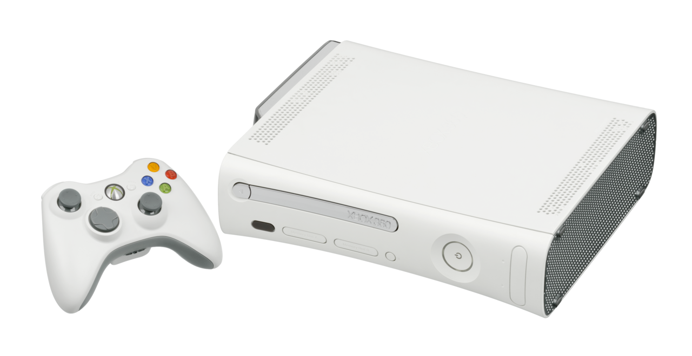
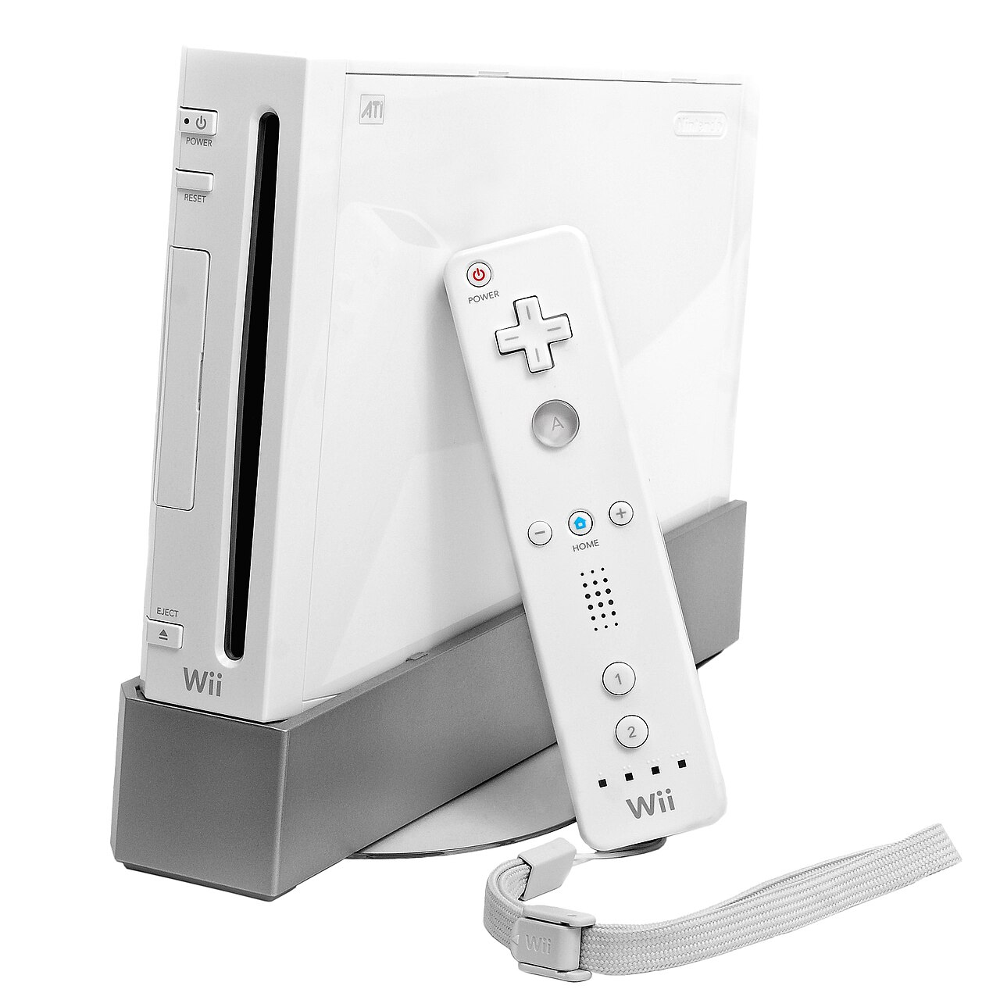

Era PS3 / 360: alta definição e jogo online
Veio a era do HD, das conquistas (achievements) e das lojas digitais. A Nintendo apostou em outro caminho com o Wii.
Xbox 360 (2005)
Coloque aqui a foto:

(sugestão: Wikimedia Commons, anotando a fonte)
Chegou antes da concorrência e consolidou o Xbox Live e o sistema de conquistas, que viraram padrão no mercado.
Jogos que marcaram
- Halo 3
- Gears of War
- Red Dead Redemption
Oque o Xbox 360 significou:O Xbox 360 representou uma das maiores transformações na história dos videogames, consolidando o entretenimento online, fortalecendo as comunidades de jogadores e aproximando os consoles de uma experiência digital cada vez mais completa. Lançado em 2005, o console da Microsoft chegou com a proposta de expandir tudo aquilo que o primeiro Xbox havia iniciado. Com gráficos em alta definição, uma Xbox Live mais desenvolvida e uma grande variedade de jogos, o Xbox 360 ajudou a definir o padrão dos consoles modernos e marcou profundamente uma geração de jogadores.
PlayStation 3 (2006)
Coloque aqui a foto: (sugestão: Wikimedia Commons, anotando a fonte)
Potente, mas caro e difícil de programar no início. Ganhou força com o tempo e teve grandes exclusivos, além de tocar Blu-ray.
Jogos que marcaram
- The Last of Us
- Uncharted 2
- Metal Gear Solid 4
Oque o Playstation 3 significou:O PlayStation 3 representou uma nova etapa na evolução dos videogames, aproximando os consoles de verdadeiros centros de entretenimento digital e elevando o nível de qualidade técnica e narrativa dos jogos. Lançado em 2006, o console da Sony chegou ao mercado com uma proposta ambiciosa, trazendo tecnologias avançadas para sua época, suporte a Blu-ray, gráficos em alta definição e conectividade online. Apesar de enfrentar dificuldades no início de sua trajetória, o PS3 conquistou seu espaço e se tornou um dos consoles mais importantes de sua geração, marcando a história de milhões de jogadores.
Nintendo Wii (2006)
Coloque aqui a foto:

(sugestão: Wikimedia Commons, anotando a fonte)
Em vez de gráficos, apostou em jogar com movimento. O Wii Remote, que lembra um controle de TV, levou os games para famílias inteiras.
Jogos que marcaram
- Wii Sports
- Mario Kart Wii
- Super Smash Bros. Brawl
Oque o Nintendo Wii significou:O Nintendo Wii representou uma verdadeira revolução na maneira de jogar videogames, mostrando que a diversão não precisava depender apenas de gráficos avançados ou controles tradicionais, mas também de movimento, interação e participação física. Lançado em 2006, o console da Nintendo apresentou uma proposta diferente da concorrência, apostando em uma experiência acessível e intuitiva que aproximou os videogames de pessoas de diferentes idades. Com seu controle sensível a movimentos, o Wii transformou a sala de estar em um espaço de interação, diversão e convivência, conquistando até mesmo pessoas que nunca haviam demonstrado interesse por videogames.